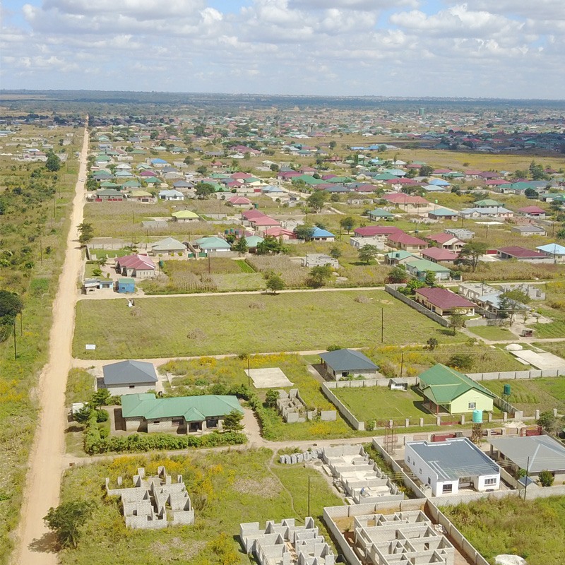

A comprehensive GIS-based platform for mapping, analyzing, and managing urban green spaces across Kitwe's 16 wards.
Advanced GIS analytics, environmental tracking, and community insights.
Explore Kitwe's green spaces with advanced GIS maps. Zoom, pan, and click for detailed info about each location.
Analyze green space distribution, coverage, and trends with comprehensive dashboard and visualization tools.
Citizens can report issues, suggest improvements, and participate in urban green space management.
Support sustainable urban development and environmental conservation efforts in Kitwe.
Real-time environmental data including air quality, temperature, and green space impact metrics.
Generate comprehensive PDF reports with statistics, analysis, and recommendations for city planning.
Simple, intuitive process to explore and manage green spaces
Start by exploring Kitwe's green spaces on our interactive map.
Click on any green space to view detailed information including type and area.
Use dashboard to understand green space distribution across wards.
Report issues, suggest improvements, or download data for analysis.
Leverage high-resolution satellite data and on-ground validation. Our platform updates dynamically, offering actionable insights for urban planners, researchers, and citizens.

"The most comprehensive green space dataset for Kitwe. Transformed how we allocate environmental budgets."
Urban Planning, KCC
"Citizen reporting feature is a game-changer. We've already restored 3 neglected parks."
NGO Partner
"Essential for my research on urban heat islands. The interface is incredibly intuitive."
CBU, Environmental Science
Supporting environmental studies, urban forestry research, and GIS-based academic projects in Kitwe. Access open-source datasets and collaborate on local conservation initiatives.
Dive into the interactive map, run spatial analysis, or take a cinematic satellite tour across all 51 Kitwe green spaces.
Access all available pages and tools in the Kitwe Green Space Mapping System